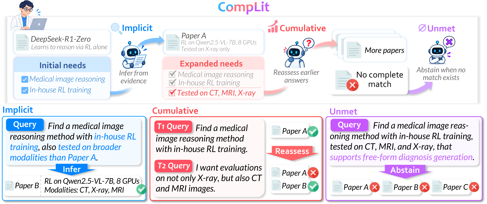
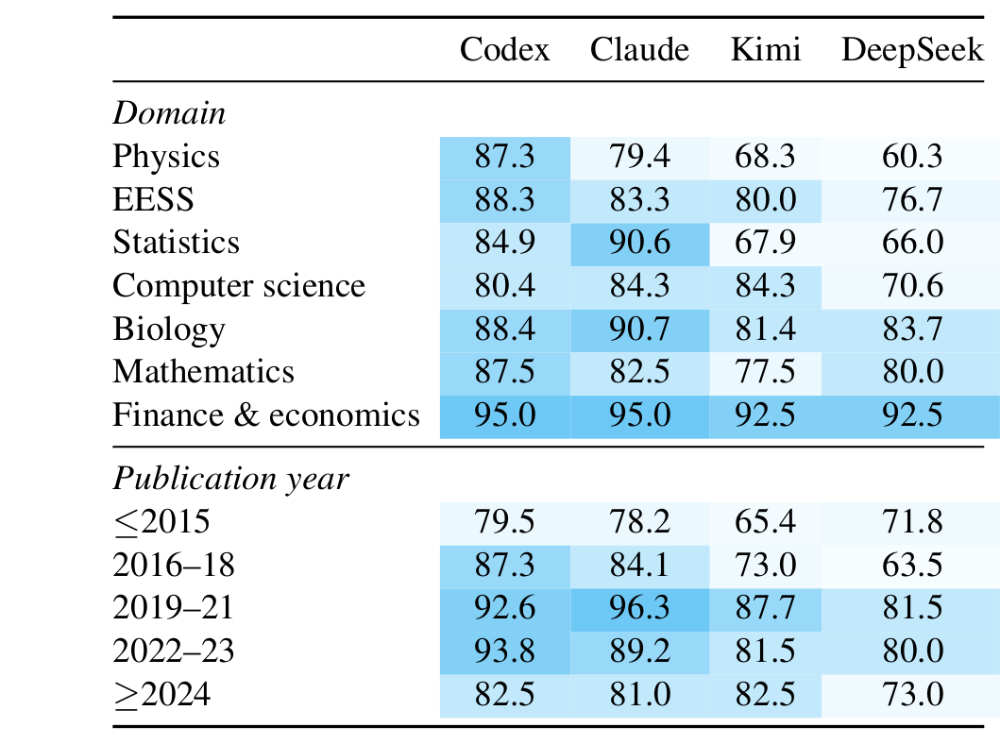
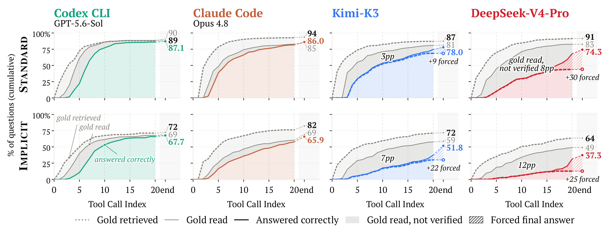
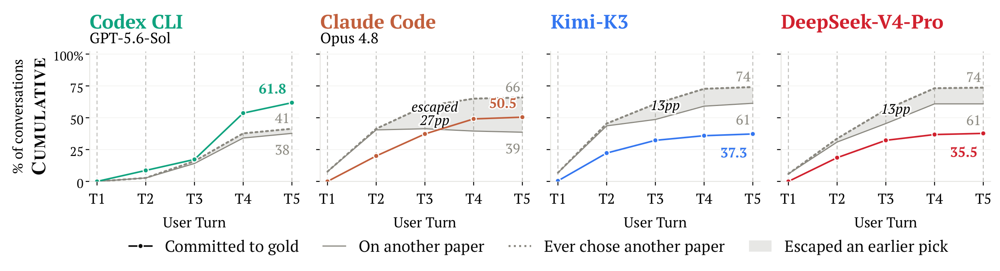
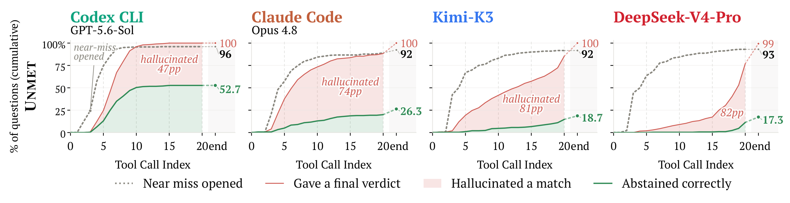

Close to existing benchmarks. Constraints at every evidence level, given at once, and a target always exists.
350 queries · 251 papersCompLit
Scientific Literature Search Benchmarks Must Cover
Implicit, Cumulative, and Unmet Needs
1Seoul National University 2LG AI Research 3Korea Advanced Institute of Science and Technology
4University of Minnesota 5University of Illinois Chicago 6University of Seoul
How much can we trust an agent to find the paper we need? As researchers, we search the literature from what we have read toward what we have not. We thus describe what we want in our own terms, which a paper may show only implicitly; our requirements grow as we read; and what we seek may lie in an empty region no paper yet covers (unmet). We introduce CompLit, a literature search benchmark spanning all eight arXiv domains, with one diagnostic setting for each of these needs. The strongest agents, Codex (GPT-5.6-Sol) and Claude Code (Opus 4.8), answer 86–87% of Standard queries, yet fall to 66–68% when requirements are implicit, lose another 6 and 15pp, respectively, as they accumulate, and abstain on at most 53% of the queries no paper satisfies. No agent leads in every domain, and all are less accurate on papers from before 2019 or after 2023. Tracing their search, we find that agents often reach the right paper, or the closest one, yet misjudge it.

Benchmark
One reference setting, three diagnostic settings
Each query combines several constraints that one paper satisfies jointly. A system returns one paper, or abstains.
Every constraint must be inferred from how a paper describes its work or compares to a named paper. Matching words is not enough.
220 queries · 179 papersThe Implicit queries are revealed over 3–5 user turns with a fixed simulator. The final answer is scored.
220 conversationsOne false constraint is added to a query whose target is easy to find, so no paper qualifies. The correct answer is to abstain.
300 queries
Examples
See a query in each setting
Real items from the release. Standard and Unmet share a target paper, and so do Implicit and Cumulative.
Constraints come from survey comparison tables
Survey authors compare the papers they cover on the distinctions that matter in their field. We restate those table cells as constraints, add claims read from each target's figures and its arXiv record, verify each one against the paper, and write queries around a research intent. The authors checked every constraint and every query by hand. An automatic uniqueness check (BM25 and Qwen3-Embedding-8B, top-50 each) removes any query that another paper also satisfies.
870single-turn queries
220conversations
8arXiv domains
193source surveys
Content: a cell of the survey table. Figural: a claim a VLM reads from the paper's figures. Comparative: a contrast with another paper in the same table. Metadata: year, venue or affiliation from the arXiv record. Counts cover the 870 single-turn queries, 6.4 constraints per query on average.
Results
Strong on Standard, weaker on every diagnostic setting
Accuracy (%) of thirteen baselines. On Cumulative, the final-turn answer is scored. On Unmet, accuracy is the abstention rate.
| Baseline | Standard | Implicit | Cumulative | Unmet |
|---|
– marks settings a baseline does not support: corpus retrievers always return a paper, and only the four frontier agents hold a multi-turn conversation. DCI-Agent-Lite runs with GPT-5.4 nano. Bold marks the best score in each group.
Accuracy by domain and year
Which agent serves which field
CompLit covers all eight arXiv domains and papers through 2026, so it can show researchers in each field which agent serves them well and where it may fall short.

DomainNo agent leads across all domains, and each struggles with different ones.
Codex leads in physics, EESS and mathematics, and Claude Code in statistics and biology. Codex scores 85–88% in most domains but 80.4% in computer science, below Claude Code and Kimi. Claude Code scores above 90% in statistics and biology but 79.4% in physics. Kimi and DeepSeek are weakest in physics and statistics.
Publication yearAll four are more accurate on papers from 2019–23 than on older or more recent ones.
Relative to their best period, the agents score 14–22 points lower on papers from 2018 or earlier. On papers from 2024 onward, Codex, Claude Code and DeepSeek score 8–15 points below their best, and Kimi 5 points below. Older and very recent papers may be harder to retrieve or verify.
Search dynamics
Agents reach the right paper, or the closest one, yet misjudge it
We trace every agent run over tool calls or user turns to see where it goes wrong.
Implicit · inferThe gold paper is retrieved, read and answered less often at every step.
From Standard to Implicit, the share of queries where the gold paper is retrieved falls by 12–27 points, read by 16–34, and answered by 19–37. Weaker agents leave more retrieved papers unread, and more read papers unchosen.

Cumulative · reassessTwo agents that tie on single queries end 11 points apart.
Codex rarely picks a wrong paper in the first place. Claude Code often leaves a wrong answer but keeps picking new wrong ones. Kimi and DeepSeek escape few wrong answers, and their current wrong share rises to 61%.

Unmet · abstainAgents open the near-miss early, then accept it as a match.
All four agents open the near-miss paper within ten tool calls in over 90% of queries, yet name a paper as a match in 47–82% of queries. The later an agent decides, the less often it abstains.

Load CompLit
Four configurations, one test split each. Every row carries the query, its constraints with evidence, the gold paper and the source survey.
from datasets import load_dataset
# standard · implicit · cumulative · unmet
ds = load_dataset("dayoon/CompLit", "implicit", split="test")
row = ds[0]
print(row["question"])
print(row["paper"]["title"]) # gold paperBibTeX
@article{ko2026complit,
title = {CompLit: Scientific Literature Search Benchmarks Must Cover Implicit, Cumulative, and Unmet Needs},
author = {Ko, Dayoon and Kim, Jihyuk and Jeong, Soyeong and Lee, Young-Jun and Lee, Dahyun and Kim, Juyeon and Kim, Gunhee and Lee, Moontae and Lee, Kyungjae},
journal = {arXiv preprint arXiv:XXXX.XXXXX},
year = {2026}
}